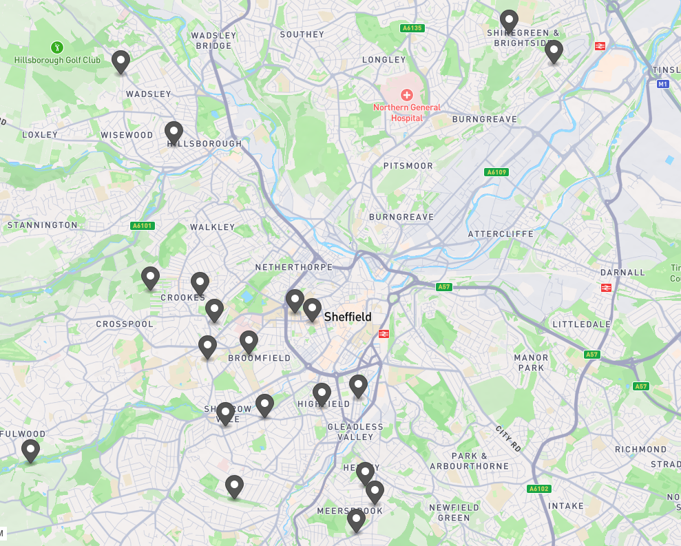
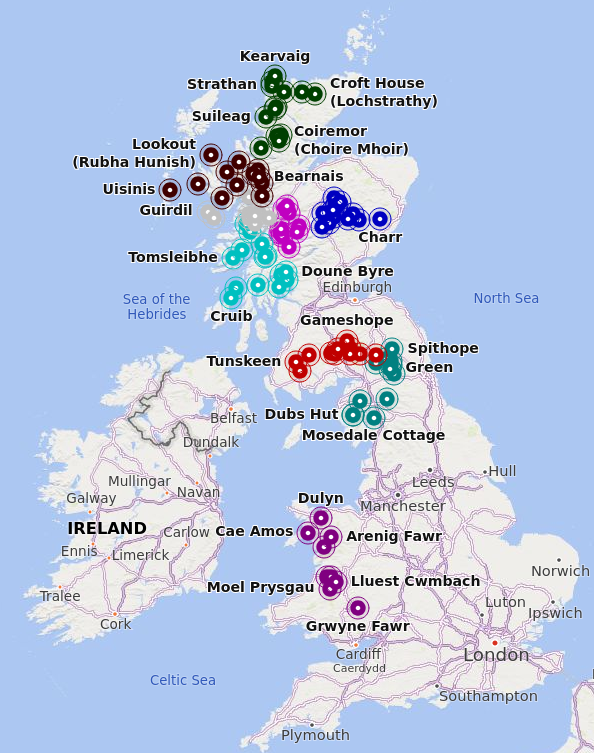
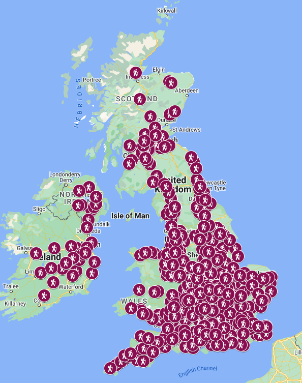
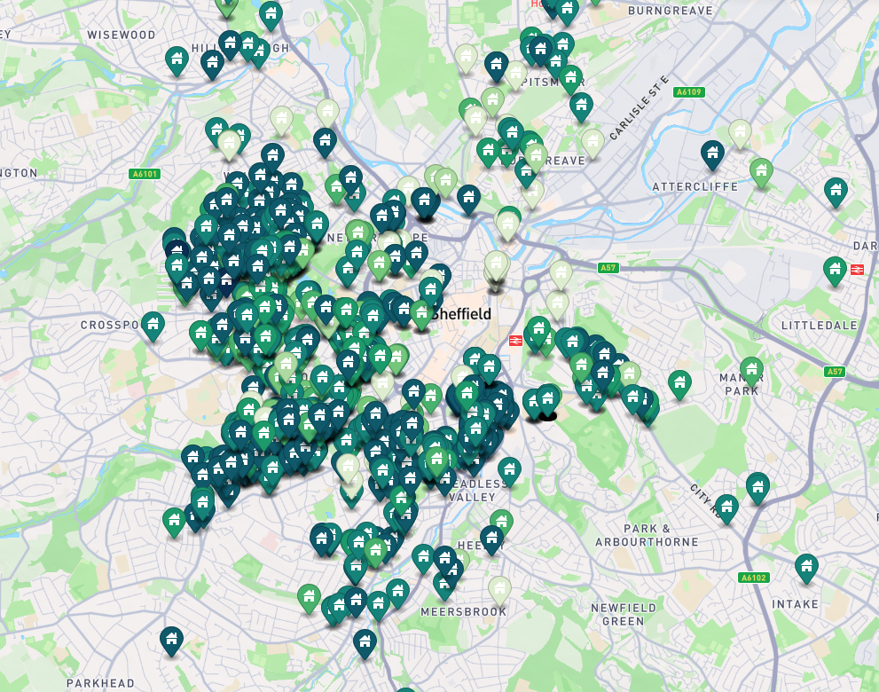
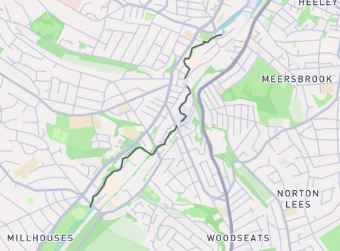
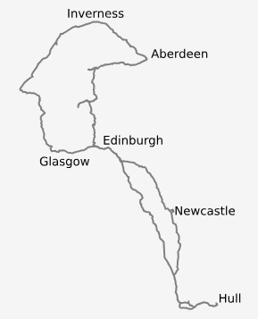
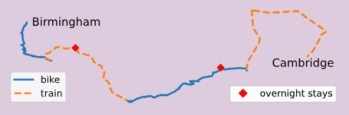

maps
I like maps, geojson, and data. As such, I end up making a lot of custom maps.
Here are some of those :)
Table of Contents
Making Data Open
Personal maps
Maps I haven't made but nonetheless enjoy
Sheffield Stink Pipes (geojson) #
I like stink pipes. This is a map of the 21 Grade II listed stink pipes in Sheffield.
The source also has generic instructions for making a geojson file from any list of data from Historic England (i.e., any collection of listed structures).
Mountain Bothies (geojson) #
source / map 1 (geojson.io) / map 2 (my server) / map 3 (the MBA)
I made this because I wanted to choose a bothie to visit that had good pedestrian access, and that I could plan a route to, and the bothie map on MBA's (Mountain Bothies Association) website uses a map overlay of OS maps, which uses the "Standard" map type, which doesn't show common footpaths, bridleways, etc.
So, my solution (as you see in source above) was to scrape the bothie locations, and create my own map, which I could then overlay onto Bing Maps, which (for some reason) includes a premium OS Maps layer for free.
In the end (and mainly because of train timetables) we went to Abyssinia.
UK & Ireland Service Stations (geojson, gpx, kml) #
source / map 1 (geojson.io) / map 2 (Google Maps)
This is a map of all the service stations I found on https://motorwayservices.uk/ and https://motorwayservices.ie/. Their map (to my knowledge) does not show all of the services, so I made my own. There is a nice flow of commands in the source of how I made the file.
It comes in very handy for hitchhiking.
Sheffield HMO (Houses in Multiple Occupation) Licences (geojson, gpx, kml) #
source / map 1 (geojson.io) / map 2 (Google Maps)
Sheffield City Council publishes data on House in Multiple Occupation Licenses (HMO Licences) in its district on https://www.sheffield.gov.uk/housing/houses-in-multiple-occupation.
They only post an excel file, and refused to consider posting a CSV. They also said that historical data is not available, and they delete the file every time they upload a new one. Hey-ho.
Anyway, I downloaded it, geocoded the addresses from street names and postcodes into latitude/longitude coordinates, and created some data files, so one could view the data nicely on a map. It also has the bonus of being colour coded by "Permitted Occupants". Apparently some houses are allowed to house 93 occupants. Crazy.
River Walks (geojson) #
Sheffield has 5 rivers, which makes it ideal for river walking. I found the IDs of the rivers on OSM (Open Street Map) and created a query for Overpass Turbo, which is a tool to visualise OSM queries.
| River | OSM relation |
|---|---|
| River Sheaf | 11890887 |
| Porter Brook | OSM relation |
| River Rivelin | OSM relation |
| River Loxley | OSM relation |
| River Don | OSM relation |
Combined
To find good-looking spots for a river walk, I combined Sheffield's four smaller rivers into one map using Overpass Turbo.
Sheaf/Porter/Rivelin/Loxley combined using Overpass Turbo
Sewage
In a river in a city, you should probably be aware that there are many storm overflow drains which dump untreated or treated sewage into the rivers. They should only operate in times of high rainfall, and I believe their use is declining.
Yorkshire Water's Storm Overflow Map / The Rivers Trust's sewage map / The Rivers Trust's article on sewage in our rivers
my river walks
I enjoy a river walk. Here are some maps of some that I've done
Scotland Trip (gpx) #
I went on a road trip through Scotland, and kept track of our stopping points. I exported several GPX files of the routes between the points, and used Python to make them into an SVG.
Bike to Cambridge (gpx) #
I biked from Birmingham to Cambridge and made a lot of maps of the journey. You'll find a lot more information in the blog post.
Maps I haven't made but nonetheless enjoy
- a map of power cuts in Yorkshire -> https://www.northernpowergrid.com/power-cuts-map
- a map of (near) real-time sewage dumping events into rivers in the UK - useful for the above river walks -> https://theriverstrust.org/sewage-map